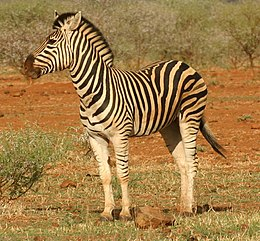

Afrika állatvilága
Trópusi esőerdő állatai
Missisipi aligátor
| Méret: 4,5 m |
| Súly:200Kg |
| Elterjedés: Az USA délkeleti részén fordul elő |
| Táplálék: hal, emlős, kígyó, teknős |
| Érdekesség: az aligátorok harapáserőssége meghaladja az 1 tonna/cm2-t. Tojással szaporodnak, melyet a nedves partoldalon készített fészekbe raknak. Gondos anyák, őrzik a fészket a kicsik kikeléséig. A Tropicariumban két hím példányuk él: Dodó és Tipli |
Sztyeppi teknős
| Méret:25 cm |
| Súly:1,5Kg |
| Elterjedés: Délnyugat-Ázsia |
| Táplálék: fűfélék, gyomok, pozsgások |
| Érdekesség: akár kétszer is tarthatnak pihenő időszakot egy évben, a téli hideg idején, illetve a nyári szárazság alatt is a föld alá vonulnak aludni |
| Osztály:Emlősök |
| Jellegzetessége:A kifejlett hím oroszlán könnyen felismerhető a sörényéről |
| Tömege:145,4–250 kilogramm |
| Előfordulása:Közép-Afrika és Dél-Afrika |
| Tápláléka:Ragadozó állat,legfőképp zebrákat,gazellákat elhullott húsos tetemeket fogyaszt. |

Zebra
| Osztály: Emlősök |
| Jellegzetesség: Legfőképp fekete csíkjaikról ismerhetőek fel |
| Táplálkozás: Növényevők, általában legelnek |
| Érdekesség róluk: Ha egyszer zebrát látsz biztosan nem egyet fogsz látni, mivel mindig csoportban mozognak,kicsit megnehezítik a ragadozók dolgát ezzel. |